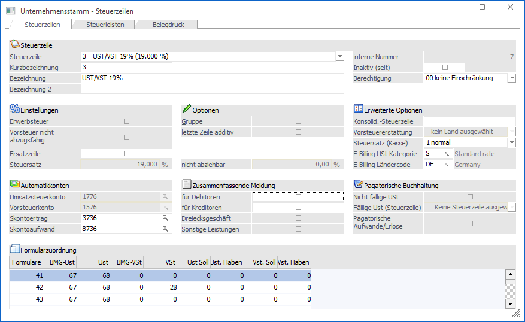

Im Unternehmensstamm werden alle Steuersätze, welche für die Buchhaltung benötigt werden, angelegt. Die Anzahl der Steuerzeilen, die angelegt werden können, ist hierbei nicht beschränkt. Dabei ist aber auch darauf zu achten, dass die Steuerzeilen vollständig angelegt werden, da nur so garantiert werden kann, dass die Umsatzsteuer-Voranmeldung korrekt ausgegeben wird. Bis auf einige Ausnahmen dürfen die Steuerkonten nicht manuell bebucht werden. Dies geschieht ausschließlich über Automatikbuchungen.
Hinweis
Weitere Informationen zur Anlage von Steuerzeilen und Steuerleisten finden Sie hier (für österreichische Mandanten) und hier (für deutsche Mandanten).

Grundsätzliche wird zwischen vier verschiedenen Möglichkeiten bei der Anlage unterschieden:
Ø Hauptsteuerzeile
Die Hauptsteuerzeile ist die übliche Form, mit der die Steuerberechnung erfolgt. Bei der Hauptsteuerzeile müssen die entsprechenden Steuerkonten sowie die Skontokonten hinterlegt werden.
Zusätzlich muss bei der Hauptsteuerzeile die Zuordnung für den Ausdruck am UVA-Formular vorgenommen werden.
Ø Ersatzsteuerzeile
Ersatzsteuerzeilen haben die gleiche Funktion wie normale Steuerzeilen. Der einzige Unterschied zwischen den beiden Arten (normale Steuerzeile und Ersatzsteuerzeile) liegt darin, dass bei den Steuerleisten für Ersatzsteuerzeilen keine Ersatzzeile eingetragen werden kann.
Ø Steuergruppe
Mit Steuergruppen können verschiedene Steuerzeilen zusammengefasst werden. Dabei können sowohl Haupt- als auch Ersatzsteuerzeilen verwendet werden. Über die Steuergruppen können auch additive Steuern (z.B. Abgabensteuer oder Getränkesteuer) berechnet werden.
Wird ein Konto bebucht, bei dem so eine Steuergruppe hinterlegt ist, wird die gesamte Steuer angezeigt. Bei der Auswertung des UVA-Beleges werden die einzelnen Steuerzeilen mit ihren Steuerprozentsätzen aufgeschlüsselt. Es wird aber auch die Steuergruppe mit dem bebuchten Betrag angezeigt.
Ø Steuerleisten
Steuerleisten können nur bei Personenkonten hinterlegt werden und werden nur dann benötigt, wenn das Programm WinLine FAKT im Einsatz ist.
Bei jeder Steuerleiste kann pro Hauptsteuerzeile eine Ersatzzeile (kann sowohl eine Haupt- als auch eine Ersatzsteuerzeile sein) eingetragen werden. Dadurch wird die beim Gegenkonto hinterlegte Steuerzeile übersteuert.
Beispiel 1
Wenn bei Exporten in die EU in ein Mitgliedsland die Lieferschwelle überschritten wird, muss in diesem Land auch die Umsatzsteuervoranmeldung abgegeben werden. Daher müssen auch die EU-Erlöse mit getrennten Steuersätzen ausgewiesen werden. Über die Steuerleiste, die beim Kunden hinterlegt ist, wird gesteuert, mit welcher Steuerzeile die Erlöse gebucht werden. Bis zum Erreichen der Lieferschwelle müssen die Erlöse mit 0 % ausgewiesen werden, danach mit den jeweiligen Prozentsätzen. Beim Debitor muss dann die Steuerleiste geändert werden.
Beispiel 2
Im Artikelstamm der FAKT ist z.B. Steuerzeile 2 mit 20% hinterlegt. Wird der Artikel an einen Kunden fakturiert, der im Inland seinen Sitz hat, soll der Artikel mit 20%Ust gerechnet werden. Verkaufen Sie denselben Artikel an einen Kunden, der im Ausland seinen Sitz hat, soll aber mit 0% Exporterlöse fakturiert werden. Um dies zu gewährleisten wird im Debitorenstamm des Auslandskunden eine Steuerleiste hinterlegt (im FIBU-Stamm) in der die SteuerZEILEN mit z.B. der Zeile 10: Exporterlöse 0% ersetzt werden (Beispielwerte aus dem Demomandanten 300M).
Grundsätzliches zum Unternehmensstamm
Im Unternehmensstamm werden die erforderlichen Steuersätze und Automatikkonten einer Firma angelegt.
Jede Steuerzeile arbeitet mit 4 Automatikkonten:
ü Umsatzsteuer-Automatikkonto: wird automatisch beim Buchen von Geschäftsfällen mit der USt bebucht.
ü Vorsteuer-Automatikkonto: wird beim Buchen von Geschäftsfällen automatisch mit der Vorsteuer bebucht.
ü Skontoertragskonto: wird beim Buchen einer Kreditorenzahlung automatisch mit dem Skontoertrag bebucht.
ü Skontoaufwandskonto: wird beim Buchen einer Debitorenzahlung automatisch mit dem Skontoaufwand bebucht.
Bei jeder Steuerzeile muss zumindest das Vorsteuer- und das Umsatzsteuerkonto hinterlegt werden. Werden die Skontokonten nicht hinterlegt, kann keine automatische Skontobuchung durchgeführt werden. Diese Skontobuchungen müssen manuell nachgeführt werden.
Die Steuer- bzw. Skontokonten müssen, bevor sie im Unternehmensstamm eingetragen werden, angelegt worden sein.
Sie müssen die 4 Automatikkonten auch für Steuersätze mit 0% anlegen.
Sie können zwar ein und dasselbe Vorsteuerkonto bzw. Umsatzsteuerkonto für verschiedene Steuersätze als Automatikkonto anlegen. Diese Vorgangsweise bewirkt, dass alle VSt- bzw. USt-Beträge, egal zu welchem Prozentsatz auf dasselbe Konto gebucht werden.
Es empfiehlt sich aber für verschiedene VSt-/USt-Sätze, jeweils ein Automatikkonto im Kontenstamm einzutragen. Diese Trennung vereinfacht Kontrollen.
Wenn Sie Umsätze weiterer Konten auf dem USt-Beleg andrucken wollen, (z.B.: Einfuhrumsatzsteuer) legen Sie einen Steuersatz zu 0% für dieses Konto an. Tragen Sie dann dieses Konto als Automatikkonto ein, was bewirkt, dass alle Soll/Haben-Umsätze des Kontos auf dem USt-Beleg angedruckt werden.
Für Österreich:
Achten Sie darauf, dass Sie (lt. RLG) für den gleichen Steuersatz mehrere Zeilen anlegen müssen (z.B. 20% für Handelswaren, 20% für Anlagegüter, 20% für sonstige Umsätze, 20 % für KFZ, 20 % für Gebäude).
Eingabefelder
Ø Steuerlistbox
Im Unternehmensstamm können alle gültigen Steuersätze des im Zugriff stehenden Mandanten angelegt werden. Es stehen beliebig viele verschiedene Zeilen / Steuersätze zur Verfügung. Aus der Auswahllistbox kann entweder eine bestehende Zeile zur Bearbeitung oder durch Anwahl des Eintrages NEUEINGABE eine neue Steuerzeile angelegt werden.
Ø Steuersatz
Das ist ein Informationsfeld, in dem der Gesamtprozentsatz angezeigt wird, der sich aufgrund der hinterlegten Steuerzeilen ergibt.
In der nachfolgenden Tabelle können die einzelnen Steuerzeilen hinterlegt werden, wobei in jeder Zeile folgende Informationen zur Verfügung stehen:
In der ersten Spalte kann aus der Auswahllistbox die Steuerzeile ausgewählt werden, die für die Steuergruppe verwendet werden soll.
In der zweiten Spalte wird die Bezeichnung der Steuerzeile angezeigt.
In der dritten Spalte wird der Steuerprozentsatz der ausgewählten Steuerzeile angezeigt.
Für den Ausdruck am UVA-Beleg (Formulare) werden die Informationen aus den einzelnen Steuerzeilen verwendet.
Allgemeine Eingabefelder
Ø Kurzbezeichnung
Eingabe einer Kurzbezeichnung für die Steuerzeile. Anhand dieser Kurzbezeichnung kann die Steuerzeile(-gruppe) auch wieder aufgerufen werden. Eine Kurzbezeichnung darf pro Mandant nur einmal verwendet werden.
Ø Bezeichnung
Eingabe einer Langbezeichnung für die Steuerzeile max. 100 Zeichen.
Ø Bezeichnung 2
Eingabe einer weiteren Bezeichnung für die Steuerzeile; max. 255 Zeichen.
Hinweis
Bei E-Rechnungsformaten wie z. B. "ZUGFeRD/Factur-X" oder "XRechnung" muss für 0%-Steuerzeilen der Grund der Umsatzsteuerbefreiung in textueller Form übermittelt werden. Dieser kann an dieser Stelle hinterlegt werden.
Beispiel
In der Warenwirtschaft werden Artikel fakturiert, die einer Steuerbefreiung unterliegen. Dazu kann eine eigene Steuerzeile, unter Angabe des Grundes der Steuerbefreiung (im Feld "Bezeichnung 2), angelegt werden. Zur Übergabe der entsprechenden Werte in die XML-Datei stehen folgende Variablen zur Verfügung:
Belegmittelteil:
ü 026484 - Grund der Steuerbefreiung (ebInterface)
ü 026485 - Bezeichnung 2 Steuerzeile
Exportkennzeichen "USt-Summen":
ü 13 - Bezeichnung 2 Steuerzeile
ü 16 - Grund der Steuerbefreiung (ebInterface)
Ø Inaktiv
Wenn ein Datensatz auf Inaktiv gesetzt wird, hat das vorerst nur die Auswirkung, dass beim Buchen eines Stapels eine Warnung ausgegeben wird, wenn inaktive Steuerzeilen verwendet wurden. Durch einen Reorg kann dieser Datensatz aus der Datenbank entfernt werden. Voraussetzung dafür ist, dass für den Datensatz keine Bewegungsdaten (Buchungen etc.) vorhanden sind. Nähere Informationen zum Reorganisieren entnehmen Sie bitte dem WinLine START-Handbuch.
Ø Berechtigung
Für jede Steuerzeile kann ein Berechtigungsprofil vergeben werden. Wenn der Anwender eine Steuerzeile aufruft, wird geprüft, ob der Anwender einer Benutzergruppe zugeordnet wurde, welche in dem jeweiligen Profil enthalten ist und ob somit eine Bearbeitung erlaubt wäre (nähere Informationen entnehmen Sie bitte dem WinLine ADMIN - Handbuch).
Hinweis
Benutzern des Typs "Administrator" oder mit der Administratorenberechtigung "Benutzeradministrator" steht in der Auswahlbox der Punkt ">> Neues Profil" zur Verfügung. Über die Anwahl dieses Eintrags kann in der Folge ein neues Berechtigungsprofil angelegt werden.
Ø Interne Nr.:
Jede Steuerzeile hat eine interne Nr., die wie der Name schon sagt nur intern vom Programm verwendet wird. Diese interne Nummer wird auch bei diversen Ausdrucken (z.B. Journal) verwendet.
Optionen
Ø Erwerbssteuer
Durch Aktivieren der Checkbox Erwerbssteuer wird die spezielle Steuerzeile als Erwerbssteuerzeile gekennzeichnet. Das bedeutet, dass beim Buchen eines Fakturenbetrages, der erwerbssteuerpflichtig ist, der Fakturenbetrag selbst netto auf das Aufwandskonto und das Kreditorenkonto gebucht wird, im Programmhintergrund aber automatisch der Prozentsatz der Steuerzeile (z.B. 20 %) als Erwerbssteuer gebucht und somit auch in der UVA auswertbar wird.
Ø Vorsteuer nicht abzugsfähig
Die Checkbox steht nur zur Verfügung, wenn die Steuerzeile als "Erwerbssteuer" definiert ist. Beim Aktivieren der Checkbox ist die Vorsteuer zu 100% nicht abzugsfähig.
Für Steuerzeilen mit "Nicht abzugsfähiger Vorsteuer" können in der Formularzuordnung die Vorsteuer-Felder nicht editiert werden. Waren vor dem Setzen der Checkbox hier bereits Einträge vorhanden, wird gewarnt, dass diese nun zurückgesetzt werden, der Vorgang kann dann noch abgebrochen werden.
Hinweis
Für die Erwerbssteuer wird im Anschluss der Buchung eine Automatikbuchung erzeugt. Die Automatikbuchung wird nur durchgeführt, wenn beim verwendeten Aufwandskonto das Steuerkennzeichen "V" hinterlegt ist.
Ø Ersatzzeile
Eine Ersatzzeile ist eine Steuerzeile, für die in den Steuerleisten kein Ersatz eingetragen werden kann. Ansonsten wird die Ersatzsteuerzeile gleich behandelt, wie eine Hauptsteuerzeile.
Ø Gruppe
Durch Aktivieren dieser Checkbox kann eine Steuerzeilengruppe angelegt werden.
Bei Steuerzeilengruppen können mehrere Steuerzeilen hinterlegt werden, wobei die einzelnen Steuerprozentsätze addiert werden (z.B. ergibt eine Steuerzeilengruppe mit den Zeilen 10 % und 20 % einen Gesamtsteuersatz von 30 %).
Wird eine Steuergruppe angelegt, können folgende Eingabefelder in der Tabelle bearbeitet werden, die bei Hauptsteuerzeilen bzw. Ersatzsteuerzeilen nicht zur Verfügung stehen:
Ø Letzte Zeile additiv
Wird diese Checkbox aktiviert, wird der letzte Steuersatz, der in der Tabelle eingetragen wird, hinzugerechnet.
Beispiel
Die Steuergruppe "Getränkesteuer" besteht aus der Zeile Getränkesteuer 10 % und Umsatzsteuer 20 %.
Ist die Checkbox inaktiv, erfolgt die Steuerberechnung nach folgendem Schema:
|
|
Betrag/Steuer |
Bemessungsgrundlage |
|
Nettobetrag |
100,- |
|
|
Getränkesteuer 10 % |
10,- |
100,- |
|
Umsatzsteuer 20 % |
20,- |
100,- |
|
Bruttobetrag |
130,- |
|
In diesem Fall wird die Getränkesteuer nicht richtig gerechnet.
Ist die Checkbox aktiv, erfolgt die Steuerberechnung nach folgendem Schema:
|
|
Betrag/Steuer |
Bemessungsgrundlage |
|
Nettobetrag |
100,- |
|
|
Getränkesteuer 10 % |
10,- |
100,- |
|
Umsatzsteuer 20 % |
22,- |
110,- |
|
Bruttobetrag |
132,- |
|
Ist diese Checkbox aktiviert, hat das nur Auswirkungen auf die letzte angelegte Steuerzeile der Steuergruppe. Sind z.B. fünf Steuerzeilen in der Steuergruppe enthalten, wird nur die letzte Steuerzeile additiv zu den vier vorhergehenden Steuerzeilen gerechnet.
Ø Konsolidierungs-Steuerzeile
In dieses Feld muss für die "konsolidierte UVA" in den Submandanten die Kurzbezeichnung der entsprechenden Steuerzeile des Hauptmandanten eingetragen werden.
Ø Vorsteuererstattung
Das neue Feld dient für die Erstellung eines Vorsteuererstattungsantrages. Über die Auswahllistbox kann einer Steuerzeile ein EU-Land eingetragen werden. Dies ist für die Erstellung eines Vorsteuererstattungsantrages notwendig.
Achtung:
Das Länderkennzeichen darf nach der Erstmeldung weder aus einer Steuerzeile entfernt, noch in eine zusätzliche Steuerzeile eingetragen werden.
Hinweis
Die Vorsteuererstattung steht für Steuerzeilen mit nicht abzugsfähiger Vorsteuer (Erwerbssteuer) nicht zur Verfügung. Die Auswahllistbox ist dementsprechend grau hinterlegt.
Ø Steuersatz (Kasse)
Für Barrechnungen in Österreich muss das sogenannte "Datenerfassungsprotokoll (DEP)" gefüllt werden, wobei hier auch die Steuerinformationen relevant sind. Damit für das DEP die richtige Zuordnung getroffen werden kann, muss die Steuerzeile entsprechend zugeordnet werden. Dabei stehen folgende Optionen zur Verfügung:
ü 0 - nicht verwenden
Dieser Wert
ist standardmäßig gesetzt, damit erfolgt auch keine Zuordnung im DEP. So eine
Steuerzeile kann nicht für Barrechnungen verwendet werden.
ü 1 - normal
Diese Option ist für
einen Steuersatz von 20% zu hinterlegen.
ü 2 - ermäßigt 1
Bei einem
Steuersatz von 10% ist diese Option zu hinterlegen.
ü 3 - ermäßigt 2
Diese Option ist
für einen Steuersatz von 13% zu hinterlegen.
ü 4 - null
Falls ein Steuersatz
mit 0% gebraucht wird ist diese Option zu wählen.
ü 5 - besondere
Dieser Steuersatz
muss gewählt werden bei Zollausschlussgebieten Jungholz (Tirol) und Mittelberg
(Vorarlberg), da diese Gemeinden zollrechtlich zu Deutschland gehören.
Ø Steuersatz
Anlage der USt Prozent-Sätze, mit denen automatisch die Mehrwertsteuer und die Vorsteuer berechnet werden sollen. Es stehen beliebig viele Zeilen und damit verschiedene Sätze zur Verfügung. Beachten Sie bitte, dass für Mischsätze auch eine Zeile mit 0% und alle 4 Konten in der Zeile angelegt werden soll.
Ø nicht abziehbar
Durch Eingabe eines Prozentsatzes in diesem Feld (ist natürlich nur bei neu angelegten bzw. noch nicht bebuchten Steuerzeilen möglich) kann gesteuert werden, welcher Prozentsatz der Steuer wirklich als Steuer geltend gemacht werden kann.
Beispiel
Sie buchen einen Aufwand (Aufwand gegen Kreditor) von Brutto 1.200,- mit 20% USt. Von diesen 200,- sind aber nur 50% tatsächlich als Steuer abziehbar - d.h. der Rest muss automatisch den Aufwand erhöhen.
Wenn Sie eine Steuerzeile verwenden, in der der Steuerprozentsatz mit 20% - und der nicht abziehbare Prozentsatz mit 50% angegeben ist, wird diese Buchung automatisch durchgeführt, d.h. am Aufwandskonto stehen 1.100,-, die Steuer macht zwar vom Prozentsatz her 200,- aus, tatsächlich werden aber nur 100,- auf das VSt-Konto gebucht.
Bei Erwerbsteuer-Steuerzeilen beträgt der nicht abziehbare Anteil der Vorsteuer immer 0% (es erfolgt also kein Abzug), egal welcher Prozentsatz hier eingetragen ist.
Hinweis für Deutschland:
Ist eine Steuerzeile als Erwerbsteuerzeile mit nicht abziehbarer Vorsteuer hinterlegt, darf in der Formularzuordnung nicht die "Feldnummer 29" in den Spalten VSt, VSt-Soll oder VSt-Haben eingetragen sein, damit diese Steuer nicht in die KZ 61 eingerechnet wird.
Ø E-Billing USt-Kategorie
In E-Rechnungsformaten wie z. B. "ZUGFeRD/Factur-X" oder "XRechnung" muss eine Kennung in Form eines Codes für die in der Rechnung enthaltenen Umsatzsteuersätze übermittelt werden.
Es steht ein Matchcode auf die Codeliste "5305" (UNTDID 5305) aus dem Menüpunkt FAKT/Stammdaten/ Belegaustausch/E-Rechnung – Codelisten zur Verfügung.
Hinweis
In Deutschland ist z. B. für den regulären und den ermäßigten Steuersatz (19% bzw. 7%) der Code "S" zu verwenden, d. h. die Umsatzsteuer fällt mit dem Normalsatz bzw. Normalverfahren an.
Für Steuerzeilen mit 0% UmSt. muss ein entsprechender Code übermittelt werden, welcher den Grund für die Umsatzsteuerbefreiung liefert (z. B. "K" - Kein Ausweis der Umsatzsteuer bei innergemeinschaftlichen Lieferungen). Folgende Codes können verwendet werden:
ü S - Normalsatz
ü Z - Nach dem Nullsatz zu versteuernde Waren
ü E - Steuerbefreit (Gebrauchtwaren, Kunstwerke, Sammlerstücke und Antiquitäten, Reisebüros)
ü K - Umsatzsteuerbefreit für innergemeinschaftliche Warenlieferungen
ü G - Export außerhalb der EU
ü O - Außerhalb des Steueranwendungsbereichs
ü AE - Umkehrung der Steuerschuldnerschaft (ReverseCharge)
Hinweis
Zusätzlich zum Code für 0%-Steuerzeilen muss der Grund der Umsatzsteuerbefreiung in textueller Form übermittelt werden. Dieser kann im Eingabefeld "Bezeichnung 2" hinterlegt werden.
Ø E-Billing Ländercode
Länderkürzel in Iso-Alpha 2, um im Prozess des E-Rechnungsimports über das BelegPro die korrekten Steuerzeilen zu ermitteln. Wird bei der automatischen Verarbeitung eine Steuerzeile gefunden, in der die "E-Billing USt Kategorie" und der "E-Billing Ländercode" enthalten sind, löst dies eine Vorrangigkeit aus.
Es steht ein Matchcode auf die Codeliste "Country" aus dem Menüpunkt FAKT/Stammdaten/Belegaustausch/ E-Rechnung – Codelisten zur Verfügung.
Hinweis
In E-Rechnungsformaten wie z. B. "ZUGFeRD/Factur-X" oder "XRechnung" wird das Land des Verkäufers und des Käufers als Iso-Alpha 2 Länderkürzel übermittelt.
Automatikkonten
Ø Umsatzsteuer/Vorsteuer
In der Spalte Umsatzsteuer bzw. Vorsteuer geben Sie das Konto an, auf das automatisch die errechnete Umsatzsteuer bzw. Vorsteuer gebucht werden soll. Das Konto muss vorher angelegt worden sein. Mehrfachnennungen desselben Kontos in mehreren Zeilen sollten bei der USt und VSt nicht gemacht werden (Trennung ges. vorgeschrieben). Auch bei 0% ein Konto angeben.
Ø Skontoaufwand/Skontoerlös
In der Spalte Skontoaufwand und Skontoerlös geben Sie das Konto an, auf das bei der Kreditoren- bzw. Debitorenzahlung Skonto automatisch gebucht werden soll. Das Konto Skontoertrag muss mit Vorsteuercode, das Konto Skontoaufwand mit Umsatzsteuercode angelegt sein.
Wird im Skontoertrag ein Konto mit Umsatzsteuercode bzw. im Skontoaufwand ein Konto mit Vorsteuercode hinterlegt, so erfolgt eine Hinweismeldung. Die Konten werden trotzdem gespeichert.
Zusammenfassende Meldung
Ø Zusammenfassende Meldung
Durch Aktivieren der Option Debitor bzw. Kreditor (ist auch bei bereits bebuchten Steuerzeilen möglich) wird festgelegt, dass diese Steuerzeile in der Auswertung "Zusammenfassende Meldung" zur Auswahl steht. D.h. Buchungen mit dieser Steuerzeile können in der Zusammenfassenden Meldung berücksichtigt werden.
Ø Dreiecksgeschäft
Wird diese Checkbox aktiviert (ist auch bei bereits bebuchten Steuerzeilen möglich), dann erhält diese Steuerzeile bei der Erstellung der Zusammenfassenden Meldung (ZM) für Österreich und für Deutschland ein eigenes Kennzeichen. Dieses Kennzeichen wird auch in der Datei für die FinanzOnline mit übergeben. Diese Option kann nicht gemeinsam mit der Option "Sonstige Leistungen" aktiviert sein.
Ø Sonstige Leistungen
Wird diese Option aktiviert (ist auch bei bereits bebuchten Steuerzeilen möglich), dann erhält diese Steuerzeile bei der Erstellung der Zusammenfassenden Meldung (ZM) für Österreich und für Deutschland ein eigenes Kennzeichen. Dieses Kennzeichen wird auch in der Datei für die FinanzOnline mit übergeben. Diese Option kann nicht gemeinsam mit der Option "Dreiecksgeschäft" aktiviert sein.
Pagatorische Buchhaltung
Ø Nicht fällige USt
Wird diese Checkbox aktiviert, werden die Felder "Fällige USt (Steuerzeile)" und "Pagatorische Aufwände/Erlöse" aktiv.
Nicht fällige Steuerzeilen können nur für Fakturen-Buchungen verwendet werden.
Ø Fällige USt (Steuerzeile)
Ist die Checkbox "Nicht fällige USt" aktiviert, muss hier die Steuerzeile ausgewählt werden, die bei der Zahlungsbuchung für die Steuerbuchung herangezogen werden soll, andernfalls kann die nicht fällige Steuerzeile nicht gespeichert werden. In der Auswahllistbox werden alle fälligen Steuerzeilen angezeigt, bei denen Steuersatz, nicht abziehbare Steuer, Erwerbsteuer und Vorsteuer nicht abzugsfähig mit den Eingaben bei der aktuellen, nicht fälligen Steuerzeile übereinstimmt.
Buchungen
Eine Faktura wird auf ein Konto mit Steuerzeile "nicht fällige USt" gebucht. Bei der Zahlung wird die Steuer automatisch umgebucht auf die Steuerzeile mit fälliger USt.
Ø Pagatorische Aufwände/Erlöse
Durch Aktivieren dieser Checkbox legen Sie fest, ob zusätzlich auch "pagatorische Aufwände/Erlöse" gebucht werden sollen. Die Checkbox ist nur aktiv, wenn für die Steuerzeile "nicht fällige USt" hinterlegt ist.
Die pagatorischen Buchungen werden in diversen Auswertungen wahlweise als außerbücherliche Buchungen mit angedruckt.
Buchungen
Eine Faktura wird auf ein Konto mit Steuerzeile "nicht fällige USt" und "Pagatorische Aufwände/Erlöse" gebucht. Diese Buchung ist eine außerbücherliche Buchung. Bei der Zahlung wird automatisch die bücherliche Buchung auf das Erlös-/Aufwandskonto sowie die Buchung auf die Steuerzeile mit fälliger USt. vorgenommen. Die Debitoren-/Kreditorenbuchungen sind außerbücherlich.
Hinweis 1
Die Vorsteuererstattung steht für nicht fällige Steuerzeilen nicht zur Verfügung, d.h. beim Setzen der Checkbox "Nicht fällige USt" wird die Eingabe im entsprechenden Feld zurückgesetzt.
Hinweis 2
Für nicht fällige Steuerzeilen können keine Formularzuordnungen eingetragen werden. Waren zuvor bereits Zuordnungen eingetragen, wird beim Setzen der Checkbox "Nicht fällige USt" gewarnt, dass diese nun gelöscht werden, der Vorgang kann dann aber noch abgebrochen werden.
Formularzuordnung
Ø Formulare
In der Tabelle kann pro UVA-Formular festgelegt werden, welchen Positionen (Variablen) die angewählte Steuerzeile für den Ausdruck zugeordnet werden soll. Dabei können zwischen den verschiedenen Werten gewählt werden:
|
Inhalt |
Verwendung |
|
BMG-Umsatzsteuer |
Bemessungsgrundlage für die Umsatzsteuerberechnung |
|
Umsatzsteuer |
Umsatzsteuer als Betrag |
|
BMG-Vorsteuer |
Bemessungsgrundlage für die Vorsteuerberechnung |
|
Vorsteuer |
Vorsteuer als Betrag |
|
USt. Soll |
Der Soll-Buchungsbetrag des USt.-Kontos |
|
USt. Haben |
Der Haben-Buchungsbetrag des USt-Kontos |
|
VSt. Soll |
Der Soll-Buchungsbetrag des VSt-Kontos |
|
VSt. Haben |
Der Haben-Buchungsbetrag des VSt-Kontos |
Derzeit werden folgende Formulare unterstützt:
Formulare
Es werden folgende Formularnummern unterstützt:
ü 1, 2 UVA-Formular Deutschland 1. und 2. Seite (gültig bis 2004)
ü 6 Berechnung der Kammerumlage Österreich
ü 9,10 UVA-Formular Österreich 1. und 2. Seite (Gültig ab 06/00), bis 12/2001 wenn die Buchhaltung in ATS geführt wird
ü 11,12 UVA-Formular Österreich 1. und 2. Seite (Gültig ab 01/2002), wenn die
Buchhaltung in EURO geführt wird
ü 13 - 16 UVA-Formular Österreich Seite 1 bis 4 (Gültig ab 01/2003)
ü 17 - 18 UVA-Formular Österreich Seite 1 bis 2 (Gültig ab 10/2003)
ü 19 -20 UVA-Formular Österreich Seite 1 bis 2 (Gültig ab 01/2006)
ü 21 - 24 Formular für Tschechien
ü 25 - 26 UVA-Formular Deutschland 1. und 2. Seite (Gültig für 2005)
ü 27 - 28 UVA-Formular Deutschland 1. und 2. Seite (Gültig ab 2006)
ü 29 Formular für Ungarn
ü 31 Formular für Kroatien
ü 33 - 34 UVA-Formular Deutschland 1. und 2. Seite (Gültig ab 2007)
ü 35 - 36 UVA-Formular Österreich Seite 1 und Seite 2 (Gültig ab 07/2007)
ü 37 - 38 UVA-Formular Österreich Seite 1 und Seite 2 (Gültig ab 01/2008)
ü 39 - 40 UVA-Formular Österreich Seite 1 und Seite 2 (Gültig ab 01/2009)
ü 41 - 42 UVA-Formular Deutschland 1. und 2. Seite (Gültig ab 2010)
ü 43 - 44 UVA-Formular Deutschland 1. und 2. Seite (Gültig ab 07/2011)
ü 45 - 48 UVA-Formular Österreich Seite 1 bis 4 (Gültig ab 01/2012)
ü 49 - 52 UVA-Formular Österreich Seite 1 bis 4 (Gültig ab 01/2013)
ü 53 - 56 UVA-Formular Österreich Seite 1 bis 4 (Gültig ab 01/2014)
ü 57 - 60 UVA-Formular Österreich Seite 1 bis 4 (Gültig ab 01/2016)
ü 61 - 62 UVA-Formular Deutschland 1. und 2. Seite (Gültig ab 2019)
ü 63 - 66 UVA-Formular Österreich Seite 1 bis 4 (Gültig ab 07/2020)
ü 67 - 68 UVA-Formular Deutschland 1. und 2. Seite (Gültig ab 2021)
ü 69 - 72 UVA-Formular Österreich Seite 1 bis 4 (Gültig ab 01/2022)
ü 73 - 75 UVA-Formular Deutschland Seite 1 bis 3 (Gültig ab 01/2023)
Nachfolgend finden Sie die Beschreibung der wichtigsten Formulare.